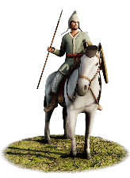
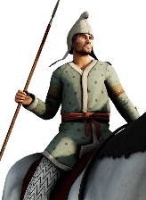
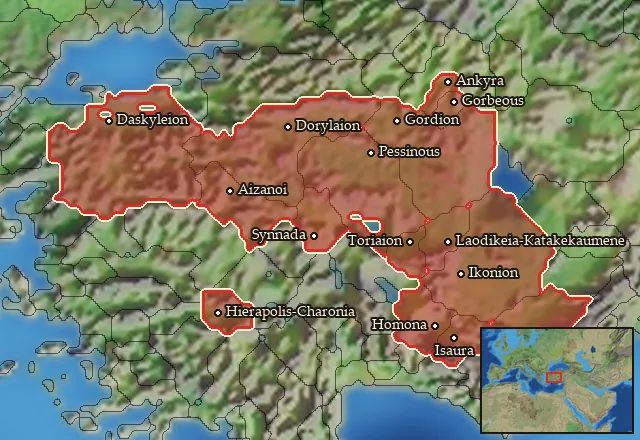

RTR: Imperium Surrectum
RTR: Imperium SurrectumPhrygian Cavalry


Class: light · Category: cavalry · Men per unit: 30
Description
These horsemen are the landed nobility of Phrygia, a large and ancient region in western Anatolia. The Phrygians once ruled an empire that stretched from the Aegean to the mountains of Cappadocia, but have now become slaves of the Macedonians and Galatians. They have fled the cities and live a simple life in the countryside, which is reflected by their equipment: rather basic clothes, Phrygian hats, only a few helmets, primitive leather shields, cheap wooden spears and a lack of body armour show how impoverished the Phrygians have become. Persians and Macedonians sometimes recruited Phrygian horsemen to enlarge their armies, but they never made them a central element, for they lacked the courage and armour of better cavalry.
Historical background
The Phrygians arrived in Asia from Thrace in the 9th century BC and, led by legendary kings such as Midas, they quickly conquered a large empire from the Hellespont to Cappadocia (Eckart Olshausen, s.v. Phryges, Phrygia, in: DNP). Phrygian culture, religion and economy flourished during the following centuries, even when the region eventually fell under the rule of the Lydian kings. Only the Achaemenid conquest of the area in 547 BC would become a turning point. The use of the Phrygian language began to decline, its cities began to shrink, and its military elite was increasingly dispersed and impoverished. This trend continued under Alexander the Great and then the Seleucids and was likely the result of a massive strategy of tax evasion (Thonemann, Phrygia: an anarchist history (2013), pp. 8-15). Tax collectors usually visited the major towns of a region and avoided the remote countryside, where travelling was dangerous and tedious (any CK player can probably relate).
This development had no positive effect on the value of their warriors, as one can imagine. In the 5th century BC, Herodotus described them as going to war with small, pelte-like wicker shields, plaited helmets (here interpreted as Phrygian caps and Phrygian helmets, since we are talking about Phrygia, after all), high shoes, daggers, javelins and spears (Hdt. 7.72-73). A 3rd-1st century statue of a Phrygian found on Cyprus (Louvre AM 175bis) has a long sleeved, quilted tunic, which completes the attire. By this time, however, the Phrygians, whom Herodotus presents as rather average soldiers, had lost even more of their reputation. According to Appian, Rome and Pontos both used Phrygian levies during the Mithridatic Wars (App. Mithr. 11 & 41), but found them rather useless (id., 19). And yet, in times of need they would always be called upon to add their numbers – in this capacity Pompey still used them at the Battle of Pharsalos (App. Bell. Civ. 2.71) in 48 BC.
We hear even less about Phrygian cavalry, but there is no doubt that they existed. Phrygia possessed much good, flat land for horses, and the nobility of the ancient kingdom must have fought on horseback. When Phrygia was conquered by the Persians, their horsemen fought in vain, but they had seemingly impressed the victors, who immediately integrated them into their own army (Xen. Cyr. 7.4.10). The victorious commander was no one less than Hystaspes (Old Persian: Vištāspa), trusted general of Kyros the Great and the father of Dareios. That he put his confidence in the Phrygian horsemen demonstrates that they were still highly valued in the 6th century BC. They next appear in the sources in the wars of the early Diadochi at the end of the 4th century BC, when Antigonos Monophtalmos, the founder of the Antigonid royal house, deployed 1,000 horsemen from Lydia and Phrygia together at the battle of Gabiene in 316 BC (Diod. 19.29.2). Yet, nothing is said about them, and they do not appear again in the records of the ancient historians. No author ever praised the bravery of the Phrygians, and the levies of Pontos and Rome in the 1st century do not even seem to have included horsemen at all. Therefore, we have represented them as a lightly armoured unit, more or less based on what Herodotus has to say about the Phrygians. He is, however, mainly talking about the Paphlagonians and claims the Phrygians were similarly armed (Hdt. 7.73). The Paphlagonians are often praised for their ferocity and martial skills (e.g., Xen. Ab. 5.6.8) and since we want to fairly represent them, our Phrygians have to do without the javelins mentioned by Herodotus.
Stats
| Rank in roster | Rank in roster | Rank in roster | Rank in roster | ||||||||
|---|---|---|---|---|---|---|---|---|---|---|---|
| Men per unit | 30 | █········· 8% | Attack | 8 | █········· 11% | Charge bonus | 26 | ████████·· 84% | Defence | 21 | ██········ 22% |
| · armour | 2 | █········· 13% | · defence skill | 17 | ████······ 36% | · shield | 2 | ███······· 26% | Morale | 10 | ███······· 30% |
| Discipline | Impetuous (may charge without orders) | Training | Highly trained | Recruitment cost | 1,582 dn | ██········ 23% | Upkeep per turn | 637 dn | █████····· 50% | ||
| Turns to recruit | 2 |
Weapons
| Primary | Secondary | Primary | Secondary | Primary | Secondary | Primary | Secondary | ||||
|---|---|---|---|---|---|---|---|---|---|---|---|
| Attack | 8 | — | Charge bonus | 26 | — | Type | melee · blade | — | Damage | piercing | — |
Defence
| Primary | Secondary | Primary | Secondary | Primary | Secondary | Primary | Secondary | ||||
|---|---|---|---|---|---|---|---|---|---|---|---|
| Total | 21 | — | Armour | 2 | — | Defence skill | 17 | — | Shield | 2 | — |
Condition and terrain
| Hit points | 1 | Mount | light horse | Ground: scrub / sand / forest / snow | -1 / 0 / -7 / 0 | Charge distance | 40 |
| Formations | Square |
Technical stats
| Time between blows (primary / secondary) | 2.5 s / — | Extra fatigue in hot climates | 0 | Spacing between men: close / loose | 2 × 4.8 m / 3 × 7.2 m | Default ranks | 5 |
In battle: Very good stamina
Who can recruit it
A core roster unit for one faction, which can raise it anywhere it holds the right building:
Any faction holding one of the provinces below can field it.
Exactly what a settlement must have, route by route (4)
| Building | Also requires | Building | Also requires | Building | Also requires | Building | Also requires |
|---|---|---|---|---|---|---|---|
| Any settlement | Garrison Building or Tier 1 Military Industrial Complex · Phrygian area of recruitment · not Paphlagonian area of recruitment · Any Government (Dependency, Indirect Rule or Direct Rule) · Tier 2 Colony not built | Indirect Rule | Garrison Building or Tier 1 Military Industrial Complex · Tier 1 Colony | Direct Rule | Garrison Building or Tier 1 Military Industrial Complex · Tier 1 Colony | Homeland | Garrison Building or Tier 1 Military Industrial Complex |
Areas of recruitment

| Zone | Provinces | ||||||
|---|---|---|---|---|---|---|---|
| Phrygian | 15 |